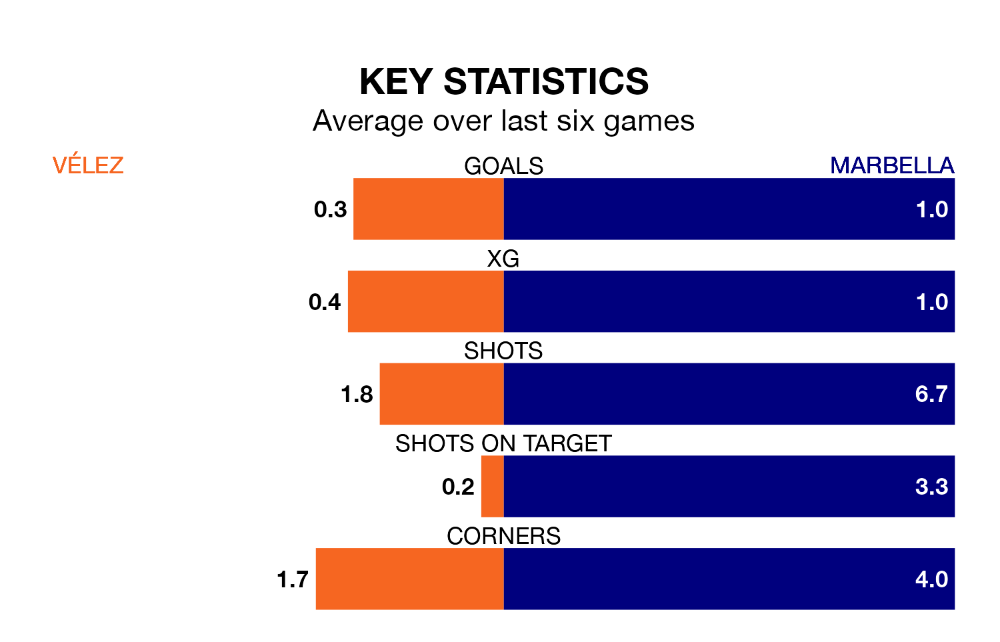

Struggling Vélez face Marbella at the Estadio Vivar Téllez on Sunday looking to build on a win in their last league outing.
After securing all three points with a 0-1 victory over Sevilla B on April 21, Vélez sit 17th in the Segunda División RFEF Group 4.
They travel to play a Marbella side third in the standings, who lost in their last match, 1-0 against Yeclano Deportivo.
Vélez are in awful form in the Segunda División RFEF Group 4, with no wins and six losses from their last six games.
With three wins and three losses over that period, Marbella's form is much better – they have taken nine points from 18, compared to the home team's zero.
With 29 goals in 32 games so far this season, Vélez are scoring at below the league average rate with 0.9 goals per game. And they are conceding more than average, letting in 46 goals at a rate of 1.4 per game.
The visitors, meanwhile, are above average scorers, with 1.1 goals per game, compared to a league average of 1.0. They have conceded 0.9 goals per game.
Updated: 07:59 (UTC), 26/04/24